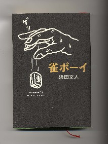

主人公は、いわゆるマージャンプロのはしり、小島武夫。若いとき、博多のブー雀荘でメンバーをしていたが、昭和40年くらいに博多から上京。水道橋にあったアイウエオという雀荘でフロアマネージャーをしているうちに、縁あって雑誌に戦術論を書くようになった。
そうこうするうちに11PMに顔をだすようになり、顔が売れてきた。やがて阿佐田哲也、古川凱章とともに新撰組を旗揚げ。やがて灘麻太郎たちとともにプロ麻雀連盟を結成、現在に至るというのがおおまかな経緯。この本は、その小島武夫が上京してから有名になって行くまでの数年間にテーマを絞ったストーリー。といっても、それだけのことなら、ここで取り上げるほどのことはない....
実は小島さんが上京してアイウエオに勤め、有名になってうった頃の数年間、σ（-＿-）もアイウエオの常連だった。最初は単なる常連とフロアマネージャーとの関係だったが、時間が経つうちにそれなりに親しくなる。そのうちに個人的な話もするようになる。
といっても内容は、博多時代の話が主体。しかし身近に接していると、なにかと麻雀以外の事を見たり聞いたりする。麻雀以外のことと言えば、まぁ、ざっくばらんに云うと、女性問題のこと。
とはいえ個人的なことだから、あえて公にするようなことでもない。しかしこの本には、そんな時代の女性問題がかなり詳しく書かれている。少なくとも小島さんはまだピンピンしているわけだから、よくここまでオープンにすることをOKしたなと、ちと驚いた（OKしたというより、もとより小島さんが承知の上で、著者である浜田さんに話したんだろうけれど）。
もちろん登場する女性はすべて仮名であるが、読んでいると顔が浮かんでくる人もいる....小島さんの奥さんなんか、面長の日本的美人で働き者。気だてもよく、実はσ（-_-）は好きだった（あ、変な意味じゃないからね）。そこで、奥さんが結構、苦労しているのを見て、少々同情していた....
本には、現在、「雀巷」という小島さんの店で、長男も仕事しているとあるが、たぶんあのとき、奥さんのお腹にいた子供かいなと思うと、なんだか変な感じ。いずれにしても、この本に書かれている小島さんの数年間は、ある程度、σ（-_-）の青春時代とオーバーラップしている。そこで本を読んでいると、その時代が思い出され、懐かしく思った次第。
|